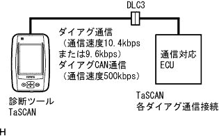
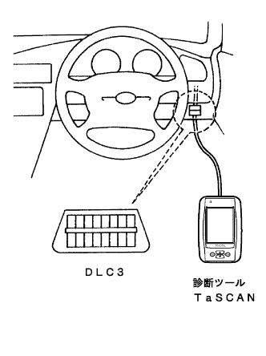
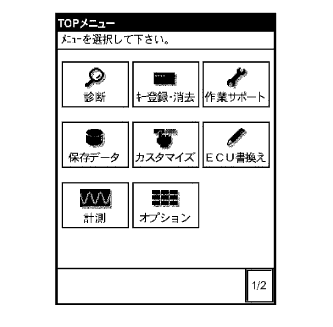
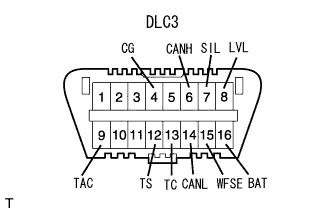
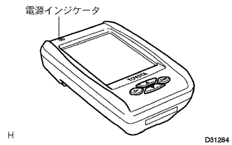
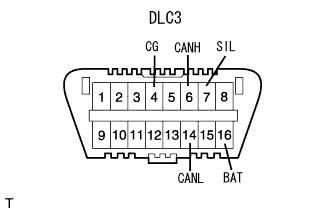
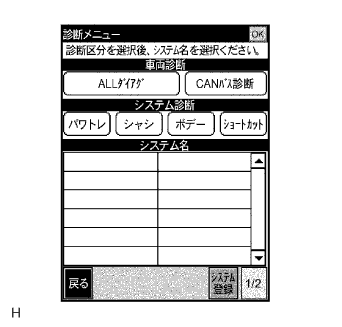

How to troubleshoot the ECU control system new diary system |
|  |
The new diagnostic system is a new failure diagnosis system that supports the sophistication and complicated vehicle electronics system.The function of this failure diagnostic system can be used by the diagnostic tool TASCAN.
The diagnostic tool TASCAN corresponding to this new diagnosis has the functions shown in the table below.
| function | overview |
| Basic inspection | Basic inspection of engine and ECT is possible (engine, ECT only) |
| Trouble shoot |
|
| ECU data monitor | Confirmation, recording, and playback of ECU data is possible |
| Active test | Voluntary driving of the actuator is possible |
| Customization | Setting according to the user's request, such as changing the timer time of the illuminated entry system |
| General -purpose measurement | Equipped with voltage measurement and oscilloscope function |
| Engine control ECU | Skid control ECU | Center airbag sensor | |
| Diag code reading (normal mode) | ○ | ○ | ○ |
| Diag code reading (check mode/test mode) | ○ | ○ (*1) | ○ |
| Freeze -frame data (computer data in the event of a failure) | ○ | ○ (*2) | - |
| Real -time reading and saving/display of computer data | ○ | ○ | - |
| Active test | ○ | ○ | - |
| Customization | - | - | - |
|  |
Connection with vehicles
Connect to the DLC3 (data link connector No.3) installed near the driver's feet.
|  |
Operation of the diagnostic tool TASCAN
When the power switch of the diagnostic tool TASCAN is turned on, the menu screen is displayed, so select the items you want to implement arbitrarily, and then proceed with the screen while interacting with the screen.
|  |
Functions have been consolidated in DLC3 (installed at the lower part of the driver's instrument panel) with the adoption of the new diary system.
DLC3 terminal name and function
| Terminal name | function |
| CG | Bodies ground |
| Canh | Can communication |
| SIL | New diagram communication with each computer |
| LVL | Head lamp leveling maintenance support |
| TAC | Engine speed output |
| TS | Test mode output instruction |
| TC | Diag code (lamp) output instruction |
| Canl | Can communication |
| WFSE | ECU program rewriting |
| BAT | Battery power supply |
|  |
TASCAN's power indicator non -lit
|  |
Connect Tascan to other vehicles and start Tascan.
| Operating state | Bug | Checkpoint |
| When Tascan's power indicator lights red or green | Vehicle side |
|
| When the TASCAN power indicator does not turn on | TASCAN body | - |
|  |
When a system diagnosis is pressed on the diagnostic menu, all system names that support diameter communication are not displayed.
Once the IG switch and Tascan power switch are turned off, start Tascan again, press the [Return] key and check the condition when the diagnostic menu is displayed.
| Operating state | Bug | Checkpoint |
| Not all system names are displayed. | TASCAN body | - |
| Do not display the system name for diages correspondence. | Vehicle side |
|
| Do not display the system name for diagen CAN communication. | Vehicle side | Control system CAN communication troubleshooting procedure 5 [DLC3 Inspection (CANH ← → CANL)] Conducted CAN communication by steps afterwards |
| Do not display one system name for diagram communication. | Vehicle side |
|
| Do not display one system name for Diag CAN communication | Vehicle side | Control system CAN communication troubleshooting procedure 3 Conducted CAN communication in the procedure after [Diagcode Confirm] |